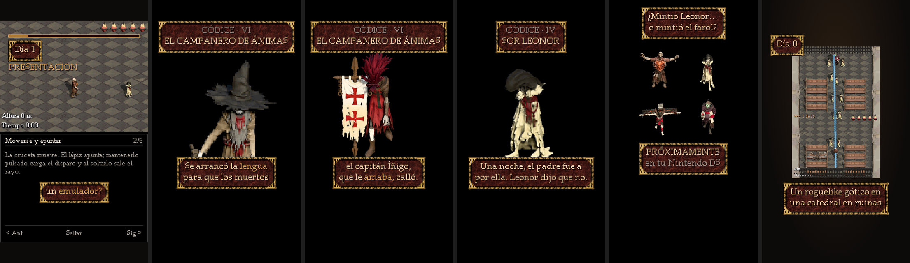
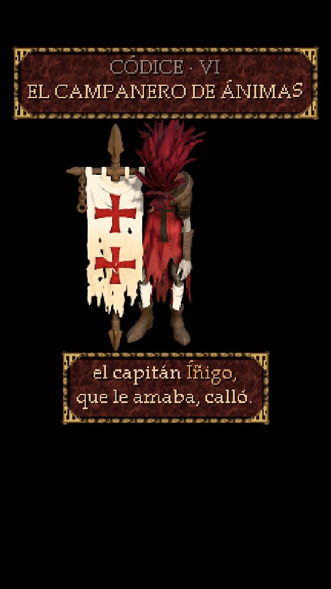
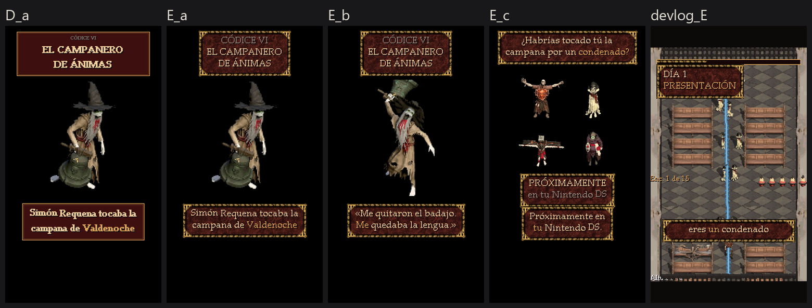
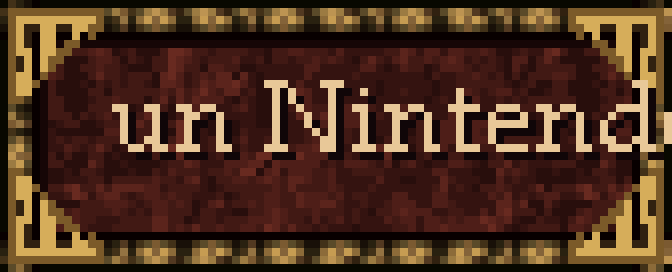
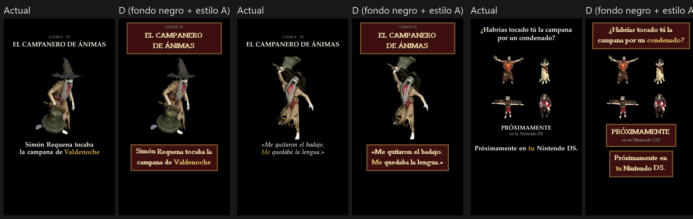
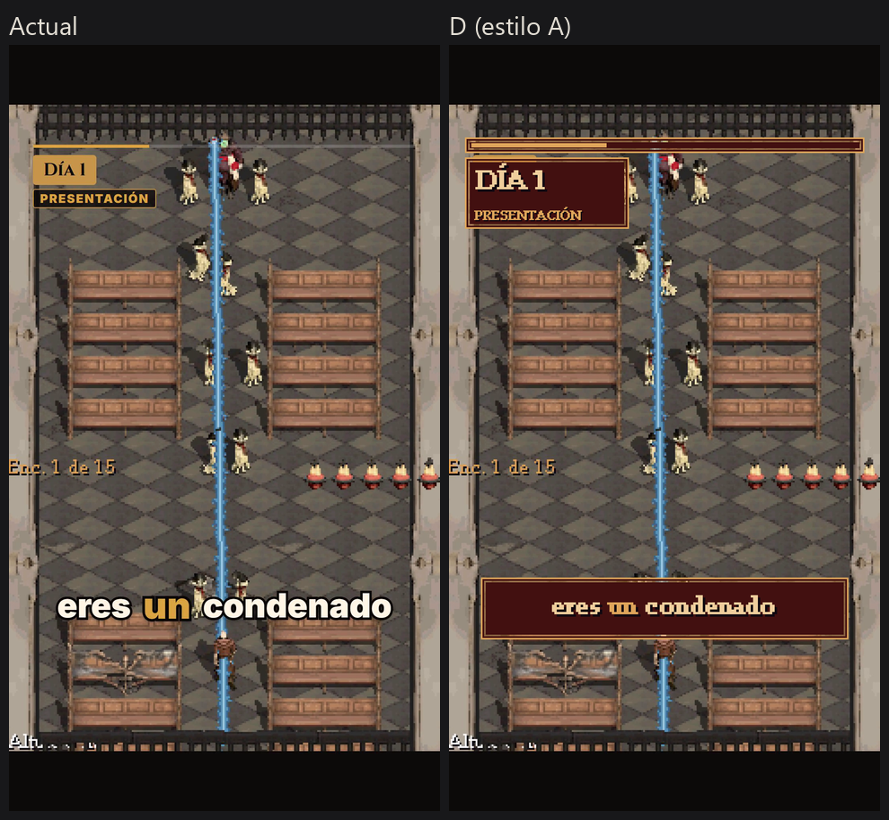
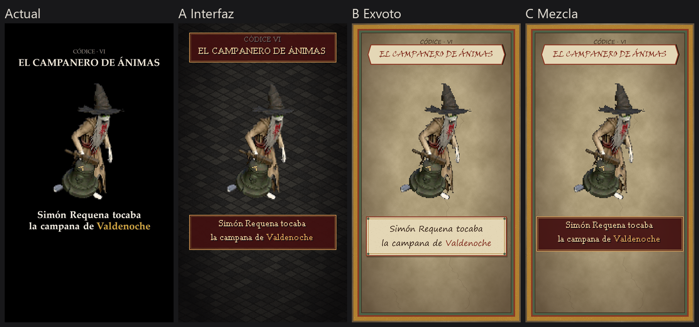
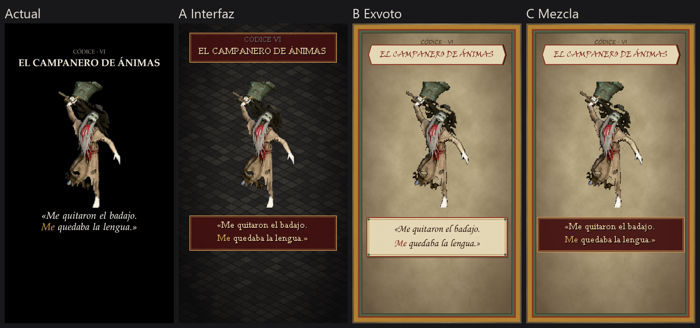
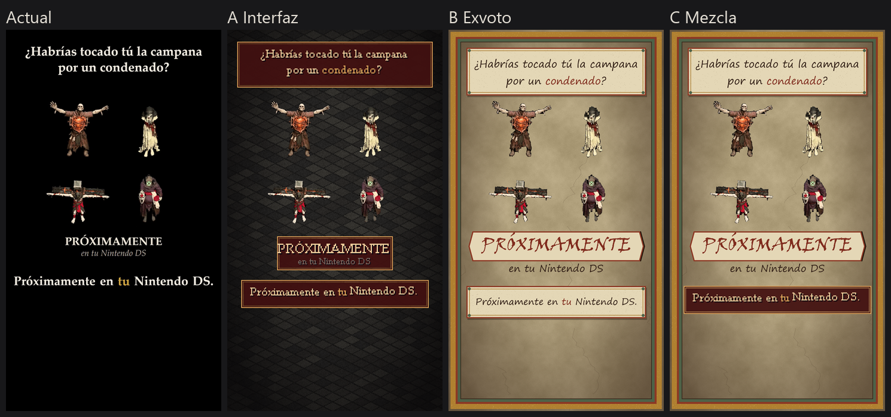

<title>Estilo de los vídeos del Códice</title>
<meta name="claude:viewport-fit-sides" content="cover">
<style>
/* Una columna para el móvil: frase corta y hoja comparativa a todo el ancho. Un solo tema oscuro, como los vídeos. */
:root{--bg:#141110;--fg:#e8dcc8;--mute:#a39684;--gold:#d8a058;--line:#3a302a;--serif:"Alegreya",Georgia,serif;--sans:"Alegreya Sans",system-ui,sans-serif;color-scheme:dark}
body{background:var(--bg);color:var(--fg);font-family:var(--sans);font-size:16px;line-height:1.5}
main{max-width:900px;margin:0 auto;padding-block:24px 48px;padding-left:max(16px,env(safe-area-inset-left,0px));padding-right:max(16px,env(safe-area-inset-right,0px));display:grid;gap:28px}
h1{font-family:var(--serif);font-weight:700;font-size:1.7rem;margin:0;text-wrap:balance}
h2{font-family:var(--serif);font-size:1.2rem;margin:0;color:var(--gold)}
p{margin:0;max-width:65ch}
.mute{color:var(--mute)}
section{display:grid;gap:10px}
.cmp{overflow-x:auto;border:1px solid var(--line);border-radius:4px}
.cmp img{display:block;width:100%;min-width:600px;max-width:none}
dl{display:grid;grid-template-columns:auto 1fr;gap:6px 14px;margin:0}
dt{font-weight:700;color:var(--gold)}dd{margin:0}
</style>
<link rel="stylesheet" href="https://fonts.googleapis.com/css2?family=Alegreya:wght@400;700&family=Alegreya+Sans:wght@400;700&display=swap">
<main>
<header style="display:grid;gap:8px">
<h1>Estilo de los vídeos del Códice</h1>
<p class="mute">Mismo vídeo (El Campanero de Ánimas), mismo ritmo y mismos textos. Solo cambia la piel. Elige una columna o descártalas.</p>
</header>
<section><h2>Tema aplicado · fotogramas reales</h2><p>Sacados de los vídeos renderizados ya con el tema: devlog, Campanero y Sor Leonor (sin Remotion), cierre y devlog antiguo.</p><div class="cmp"></div></section>
<section><h2>Subtítulos en movimiento</h2><p>Tres segundos del Campanero: la palabra que se dice se enciende en oro.</p><div class="cmp"></div></section>
<section><h2>Ronda 3 · Cajas con el arte del inventario</h2><p>La piedra y el marco dorado salen del inventario real del juego (la piedra, teñida de rojo). Letra sin engordar. La primera columna es la ronda 2, para comparar.</p><div class="cmp"></div></section>
<section><h2>Ronda 3 · De cerca</h2><p>Esquina del marco y piedra ampliadas: es pixel art de la DS, sin suavizados.</p><div class="cmp"></div></section>
<section><h2>Ronda 2 · Fondo negro + letra del juego (lore)</h2><p>Lo elegido: el negro de siempre y todo el texto con la letra y las cajas de los menús de la DS.</p><div class="cmp"></div></section>
<section><h2>Ronda 2 · El mismo tema en el devlog</h2><p>El rótulo «Día 1» y los subtítulos sobre el clip del juego.</p><div class="cmp"></div></section>
<p class="mute">Ronda 1, ya decidida:</p>
<dl>
<dt>A</dt><dd>Interfaz del juego: la letra y las cajas granate con borde dorado de los menús de la DS, sobre el suelo de la catedral.</dd>
<dt>B</dt><dd>Exvoto: pared encalada, marco pintado ocre y óxido, la narración en una cartela como la de los exvotos.</dd>
<dt>C</dt><dd>Mezcla: marco y títulos de exvoto, subtítulos con la caja del juego.</dd>
</dl>
<section><h2>1 · Título y narración</h2><p>Lo que se ve casi todo el vídeo: cabecera, personaje y subtítulo.</p><div class="cmp"></div></section>
<section><h2>2 · La cita</h2><p>Cuando habla el condenado. Hoy va en cursiva dorada.</p><div class="cmp"></div></section>
<section><h2>3 · Cierre</h2><p>Pregunta al espectador y «Próximamente en tu Nintendo DS».</p><div class="cmp"></div></section>
<p class="mute">Son maquetas sobre fotogramas reales; el personaje recortado tiene un filo oscuro que en el vídeo final no estará. Las letras de B son provisionales (las del equipo); para el vídeo final usaríamos una de rótulo pintado con licencia libre.</p>
</main>
